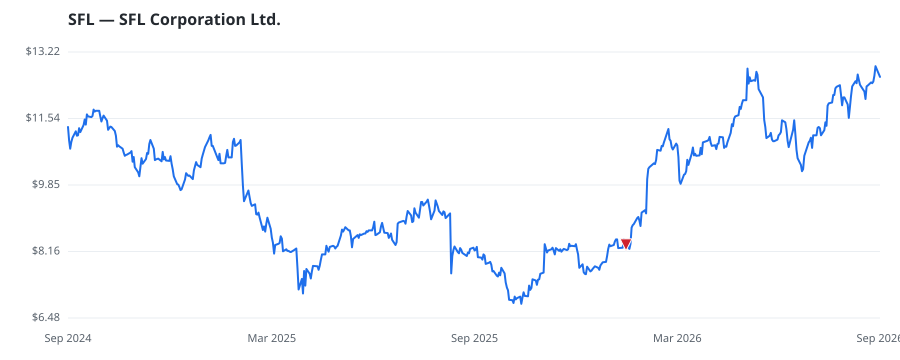

bullish · bearish · n/a — dots: price>SMA10 · SMA10>SMA50 · SMA50>SMA200 · up>down volume (20d)
Other · small cap

SFL Corp Ltd is an international ship-owning and chartering company. The company is engaged in transporting crude oil and oil products, dry bulk and containerized cargoes, freight of rolling cargo, and offshore drilling and related activities. The company operates as a single reportable segment, generating revenue from long-term, fixed-rate charters. Its Additional revenue sources include sales-type lease interest income, voyage charter and pool revenues, and drilling contract revenues. · website